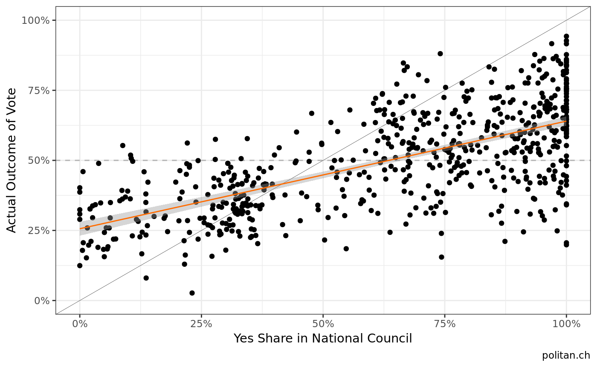
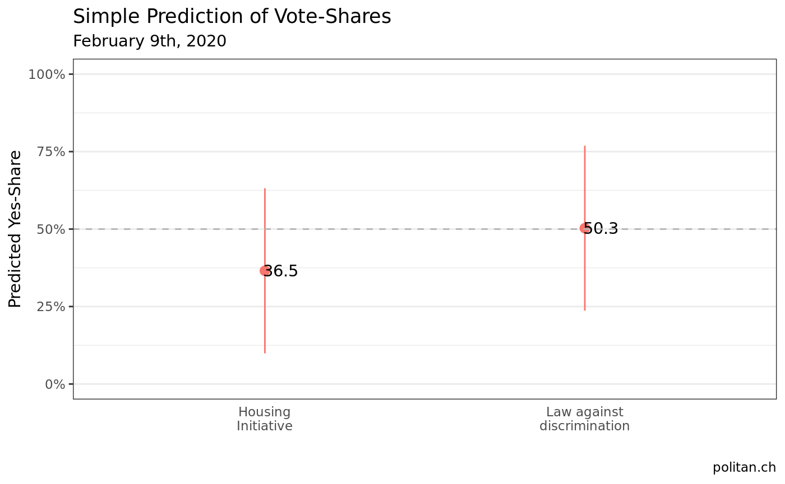
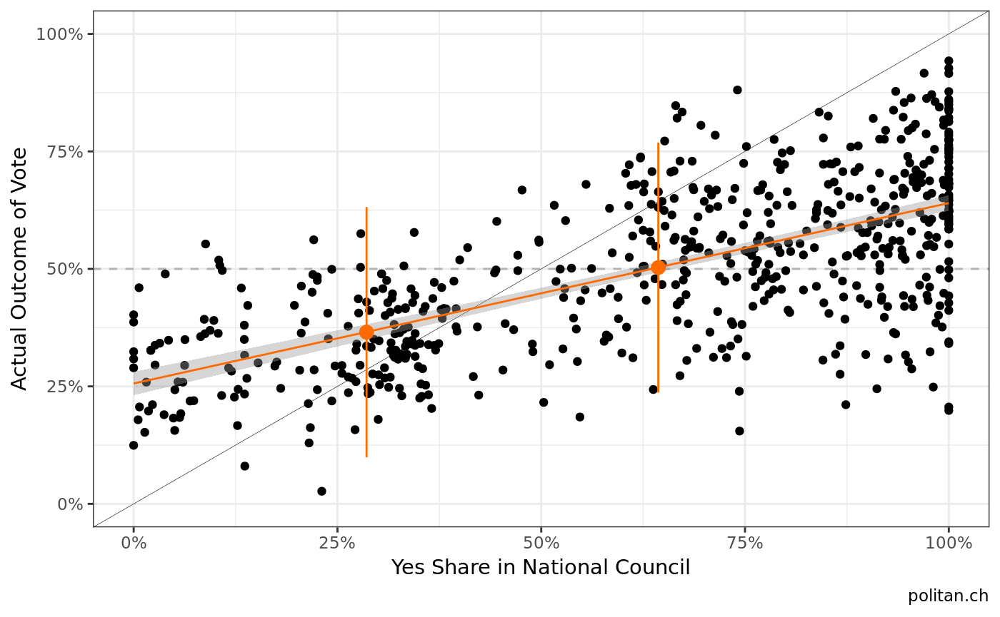

Predicting vote outcomes with  Data
Data
This blogpost shows how to perform a simple prediction of vote outcomes based on Swissvotes data in just a few steps.
1. Retrieve and prepare the data
First, you have to make sure that your machine is connected to the internet. The function get_swissvotes fetches all data stored within the swissvotes database. Swissvotes offers one of the most comprehensive data platforms in relation to Swiss referendums and initiatives.
# installation from CRAN (stable)
# install.packages("swissdd")
# install.packages("dplyr")
# installation from github (ongoing updates)
# devtools::install_github("politanch/swissdd")
library(swissdd)
library(dplyr)
library(ggplot2)By default, function extracts only the database provided by Swissvotes. However, you can specify that you want the codebook as well (or just the codebook for that matter). Additionally, there is a specification to save the citation. If you work with data from Swissvotes, please cite the data accordingly.
First, we extract data from the database and select the variables we need to create our prediction. For some reason we might assume that the National Council represents the people. It this is the case, it should be reflected in a similar pattern in yes shares in the National Council and later on in the actual yes share of a popular vote.
2. Exploratory Analysis : is our assumption accurate?
After downloading and preparing the data, we calculate the share of yes votes in the National Council and create a scatterplot to inspect if our intuition about the relationship can be seen in the data.
#extract data from database
swissvotesDB <- get_swissvotes(DB=T, savecitation=F, codebook=F) %>%
#select variables we need
dplyr::select(anr, volkja.proz, nrja, nrnein) %>%
#make numeric and rename variables
mutate(nrja = as.numeric(nrja),
nrnein = as.numeric(nrnein),
volkja.proz= volkja.proz/100)%>%
rename(bfsnr=anr,
yesshare = volkja.proz)
#clean data
swissvotesDB[swissvotesDB=="."] <- NA
#calculate share of yes votes in national council
swissvotesDB <- swissvotesDB %>%
mutate(nr_yesshare = nrja / (nrja+nrnein))
plot1 <- ggplot(swissvotesDB, aes(x=nr_yesshare, y= yesshare))+
geom_hline(yintercept=.5, linetype="dashed", color="grey70")+
geom_point()+
geom_abline(intercept = 0, slope=1, size=.1)+
scale_y_continuous(limits=c(0,1), labels=scales::percent)+
scale_x_continuous(limits=c(0,1), labels=scales::percent)+
geom_smooth(method="lm", se=T, size=.5, color="#FF6B00")+
labs(y="Actual Outcome of Vote", x="Yes Share in National Council", caption="politan.ch")+
theme_bw()
plot1
There seems to be a positive correlation (what a surprise!)…
3. Predict the otucome of the upcoming votes
In the last step we estimate a very basic model and then predict the vote shares for the two national votes on February 9th, 2020. In order to do so, we split the data into a training set and a prediction set.
#split data
estimation_data <- swissvotesDB[!swissvotesDB$bfsnr%in%c(6290, 6300),]
prediction_data <- swissvotesDB[swissvotesDB$bfsnr%in%c(6290, 6300),]
#estimate a model
fit_m1 <- lm(yesshare ~ nr_yesshare, data=estimation_data)
#predict
prediction <- predict(fit_m1, newdata = prediction_data, interval="predict") %>% as.data.frame
prediction$bfsnr <- c(6290, 6300)We can now plot the predictions for the two ballots. Note that it is crucial to correctly report uncertainty, hence, we have to include the prediction interval as well.
ggplot(prediction, aes(x=as.factor(bfsnr), y=fit, ymin=lwr, ymax=upr))+
geom_pointrange(aes(color="#FF6B00"))+
geom_text(aes(label=round(fit*100, 1)), nudge_x = 0.05)+
scale_y_continuous(limits=c(0,1), labels=scales::percent)+
scale_x_discrete(labels=c("Housing\nInitiative", "Law against\ndiscrimination"))+
geom_hline(yintercept=.5, linetype="dashed", color="grey70")+
labs(title="Simple Prediction of Vote-Shares", subtitle="February 9th, 2020", y="Predicted Yes-Share", x="", caption="politan.ch")+
theme_bw()+
theme(legend.position="none",
axis.ticks.x = element_blank(),
panel.grid.major.x = element_blank())
#add the points to the previous plot
prediction_data$yesshare[prediction_data$bfsnr==6290] <- prediction$fit[1]
prediction_data$yesshare[prediction_data$bfsnr==6300] <- prediction$fit[2]
prediction_data$lwr[prediction_data$bfsnr==6290] <- prediction$lwr[1]
prediction_data$lwr[prediction_data$bfsnr==6300] <- prediction$lwr[2]
prediction_data$upr[prediction_data$bfsnr==6290] <- prediction$upr[1]
prediction_data$upr[prediction_data$bfsnr==6300] <- prediction$upr[2]
plot1 + geom_point(data=prediction_data, aes(y=yesshare, x=nr_yesshare), color="#FF6B00", size=3)+
geom_linerange(data=prediction_data,aes(ymin=lwr, ymax=upr), color="#FF6B00")